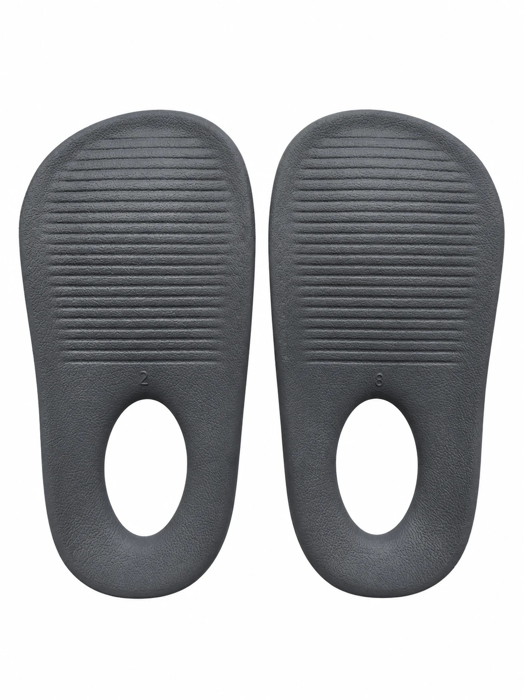

WADIZ 오픈예정 · 11.11 · 쿼드그립 아치가득 인솔
오후 4시, 발이 먼저
퇴근하고 싶을 때.
새 신발 말고, 바닥만 바꾸세요.
가지고 계신 신발에 깔아 쓰는 아치가득 인솔을
와디즈에서 가장 먼저 공개합니다.
알림신청은 무료, 결제 없음 · 펀딩 시작

KINTEX 메가쇼 · 11.12(목)~15(일) · 부스
하나만 해도 선물,
피드 올리면 룰렛까지
STEP 1 · 둘 중 하나만 하면
- 와디즈 오픈 알림 신청아래 버튼으로 신청하고 완료 화면을 보여 주세요.
- 인스타그램 @rharashoe 팔로우팔로우한 화면을 보여 주세요.
STEP 2 · 피드 올리면 룰렛 1회, 당첨 상품 증정
- 부스 사진 피드 올리기공개 계정으로 올리고, 사진에 @rharashoe를 태그한 뒤 본문에 아래 3가지를 꼭 넣어 주세요.
STEP 1 선물과 룰렛은 1인 1회 · 하루 준비 수량이 소진되면 그날 이벤트는 마감됩니다 · 비공개 계정 게시물은 인정되지 않습니다.
경품을 받고 올리는 게시물이라 공정거래위원회 지침에 따라 #협찬 표기가 꼭 필요합니다.
QUAD GRIP · ARCH INSOLE
아치 아래 빈 공간을
가득 채웠습니다
발 아치 아래 비어 있던 공간을 인솔이 받쳐 줍니다.
뒤꿈치 자리를 둥글게 감싸 인솔이 제자리를 지킵니다.
버려지던 우드칩을 섞어 만든 소재입니다.
- STEP 1쓰던 깔창을 들어 올리고
- STEP 2뒤꿈치에 맞춰 깔고
- STEP 3깔창을 다시 덮으면 끝
- 사이즈
- M 15cm · L 17cm (반굽 길이)
- 컬러
- 그레이 · 모카무스
- 쓰는 곳
- 가지고 계신 운동화 · 출근화
의료기기가 아닙니다. 제품 이미지에는 연출 장면이 포함될 수 있습니다.
퇴근하면
신발부터 벗게 되는
그 발을 위해.
Made for Standing. RHARA SHOE
DESIGN ADVISORY · 왜 이렇게 만들었나
형태와 신는 방식을
정형외과 전문의와 같이 봤습니다
원장님 손이 인솔 아치를 짚는 컷
(정면 흰 가운 단독 컷 ✗ · 다크그레이 톤 보정)
- 새 신발 말고, 바닥만 바꿔요.
- 아치 아래 빈 공간을 채우는 형태예요.
정형외과 전문의 이문홍 원장 · 설계 자문 대사는 원장 검수본으로 교체
이문홍 원장은 제품 설계 자문에 참여하고 자문료를 받았습니다. 이 제품은 의료기기가 아니며, 질환의 치료나 교정을 위한 제품이 아닙니다.
BRAND FILM · From Road to Floor.
도로를 달리던 고무가
매일 걷는 바닥이 되기까지
소리를 켜고 보세요 · 일부 장면은 AI로 생성했습니다(Google Flow).
NEXT ·
바닥에 닿는 네 곳을
먼저 생각한 신발
라라슈의 첫 신발, 쿼드그립 종일편한 워킹화.
출근길부터 근무 중, 퇴근길까지 그대로 신도록 만들고 있습니다.
- 01
- 밑창 4곳 그립 패드 · 폐타이어 고무와 실크벽지 PVC를 다시 원료로
- 02
- 깔창 없는 일체형 안창 · 자체 소재 E 실리폴리렌
- 03
- 한쪽 257g (270mm 기준)
워킹화는 일체형 안창이라 아치가득 인솔을 따로 넣지 않습니다.
FAQ
자주 묻는 질문
와디즈 알림신청은 무엇인가요?
와디즈 오픈예정 페이지에서 알림신청을 누르면 펀딩이 열릴 때 와디즈가 알려 드립니다. 결제는 없고 언제든 취소할 수 있습니다.
펀딩은 언제 시작하나요?
11월 11일 오픈예정으로 먼저 공개하고, 펀딩은 에 시작합니다.
어떤 신발에 쓸 수 있나요?
가지고 계신 운동화나 출근화에 쓰던 깔창 아래 깔아 씁니다. 라라슈 워킹화는 일체형 안창이라 따로 넣지 않습니다.
사이즈는 어떻게 고르나요?
M 15cm, L 17cm 두 가지입니다. 신발 사이즈별 추천표는 와디즈 페이지에서 안내합니다.
의료용 제품인가요?
아닙니다. 의료기기가 아니며 질환의 치료나 교정을 위한 제품이 아닙니다.
박람회 이벤트는 어떻게 참여하나요?
와디즈 알림 신청이나 인스타그램 팔로우 중 하나만 하고 화면을 보여 주시면 새활용 칫솔을 드립니다. 여기에 부스 사진을 인스타 피드에 올리시면(@rharashoe 태그, #라라슈 #협찬) 룰렛을 1회 돌려 당첨 상품을 드려요. 하루 준비 수량이 소진되면 그날은 마감됩니다.
피드에 #협찬을 왜 넣어야 하나요?
경품을 받고 올리는 게시물은 공정거래위원회 추천·보증 심사지침에 따라 경제적 대가를 받았다는 표시가 필요합니다.
워킹화는 언제 나오나요?
출시일이 정해지면 워킹화 출시 알림을 신청하신 분께 가장 먼저 알려 드립니다.
11월 11일,
와디즈에서 먼저 만나요
와디즈 오픈 알림 받기
알림신청은 무료이고 결제가 없습니다.